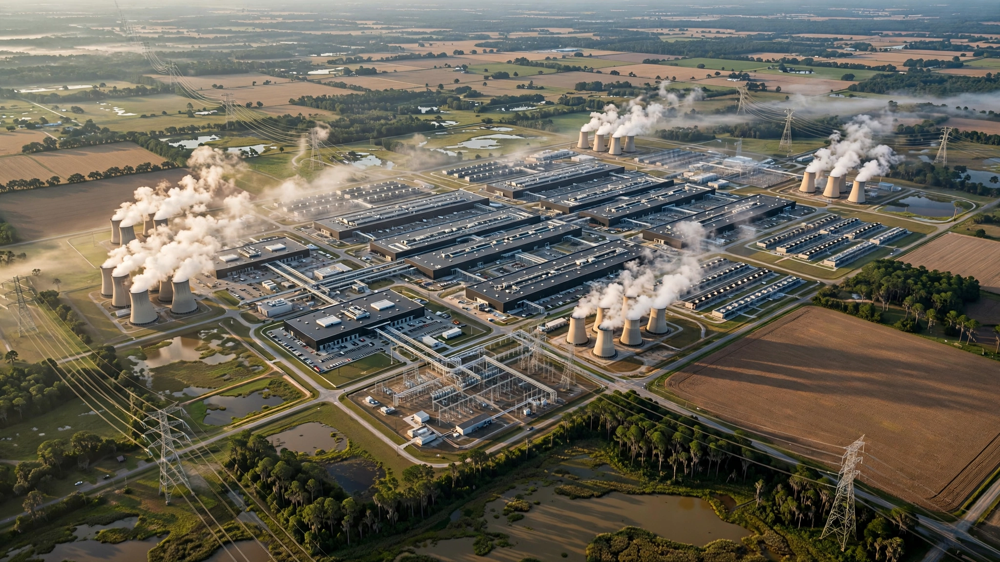

⚡ Energy
OpenAI Just Signed a 25-Year Deal for 3.2 Gigawatts in Georgia. That's Enough to Power 2.5 Million Homes.
OpenAI's new Effingham County data center needs 3,200 MW, roughly 71% of Plant Vogtle's output. We ran the math on what it means when a single AI company becomes a state's largest electricity consumer and agrees to feed 1,000 MW back during emergencies.

Three-point-two gigawatts. That is how much power OpenAI says it will need for a single data center complex in Effingham County, Georgia, according to a 25-year power supply agreement announced Wednesday with Georgia Power, a subsidiary of Southern Company. For context, Plant Vogtle, the largest nuclear power plant in the United States and the crown jewel of Georgia's electricity infrastructure, generates 4,536 MW across four reactors that took decades and more than $45 billion to build. OpenAI wants 71% of that output routed to a single customer.
Nobody has ever done this before. Not Microsoft, not Google, not Amazon. A single AI facility requesting more electricity than the city of Atlanta uses on a summer afternoon, locked in for a quarter century, located in a county of 68,000 people.
The Household Math
We calculated what 3.2 GW means in human terms. At a 95% capacity factor, which is standard for large data center campuses with redundant power, the facility would consume approximately 26.6 terawatt-hours per year. An average American household uses about 10,500 kWh annually, per the U.S. Energy Information Administration. That means OpenAI's single Georgia facility would consume as much electricity as roughly 2.5 million American homes.
| Comparison | Power / Consumption |
|---|---|
| OpenAI Effingham County facility | 3,200 MW (~26.6 TWh/yr) |
| Plant Vogtle (4 reactors, largest US nuclear plant) | 4,536 MW (~33.9 TWh/yr) |
| Equivalent US homes powered | ~2,533,000 |
| Georgia total retail electricity sales (2024) | 150 TWh |
| OpenAI as share of Georgia consumption | 17.8% |
Effingham County's population is approximately 68,000 people. OpenAI's facility would consume enough power for 37 times the county's equivalent households. Georgia's entire state had total retail electricity sales of 150 TWh in 2024. One OpenAI data center would represent 17.8% of the state's total consumption, a share comparable to what the entire residential sector uses in some smaller states.
The Reverse-Flow Provision
Buried in the deal's terms is a provision that has no precedent in the history of American electricity: OpenAI has agreed to provide up to 1,000 MW back to Georgia Power's grid during periods of high demand. Read that again: a tech company is committing to act as a dispatchable power source for a major utility.
Georgia Power's summer peak demand runs approximately 20,000 MW, based on historical load data from the utility's integrated resource plans. OpenAI's reverse-flow commitment represents 5% of the system's peak capacity, equivalent to the output of a mid-sized natural gas plant. During a heat wave or grid emergency, OpenAI would throttle its AI workloads and feed a gigawatt of electricity back into the system that heats and cools Georgia homes.
We estimated the economic value of this provision. At wholesale electricity prices during peak events, which typically range from $40 to $80 per MWh in the Southeast, and assuming 400 to 600 peak hours per year when the reverse flow would be called upon, the provision is worth roughly $16 million to $48 million annually to Georgia Power. Compare that to the $80 million community investment fund OpenAI announced as part of the deal, and the reverse-flow provision starts to look like the real concession: it converts a massive grid liability into a reliability asset, giving Georgia Power a dispatchable resource it does not have to build or maintain.
The Vogtle Problem
Building the electricity supply for OpenAI's facility is a problem of Vogtle-scale proportions. Plant Vogtle's Units 3 and 4, two AP1000 pressurized water reactors producing a combined 2,234 MW, were originally budgeted at $14 billion when construction began in 2009 and eventually cost $36.8 billion by the time Unit 4 entered commercial operation in April 2024. At that cost per megawatt, building 3,200 MW of nuclear capacity would run approximately $52.7 billion, more than the GDP of Costa Rica.
Georgia Power is not building nuclear for OpenAI, of course. Georgia Power's approved $16.3 billion expansion plan relies primarily on natural gas plants, with roughly 60% of new capacity from gas-fired generation and the rest from solar and battery storage. Georgia's Public Service Commission approved the plan unanimously in December 2025 after its own staff had initially recommended against approving any of the proposed gas plants because of their high costs and the uncertainty that data center demand would materialize.
Staff reversed their position on the morning of the final hearing.
The Stranded-Cost Gamble
Here is the calculation that should concern every Georgia Power customer. In total, the approved expansion, $16.3 billion in construction costs, could ultimately cost ratepayers $50 billion to $60 billion over the lifetime of the assets when interest payments and guaranteed utility profits are included, according to the Southern Alliance for Clean Energy, which opposed the expansion. Georgia Power has forecast 8,200 MW of additional load by winter 2030-31. Eighty percent of that projected demand is expected to come from AI data centers.
If AI companies slow construction, downsize their power requirements, or move projects to other states (New York just banned data center construction for a year, and 20 projects totaling $98 billion in investment were blocked or delayed between March and June 2025 alone), Georgia Power's residential and small-business customers would be left paying for gas plants and grid infrastructure built to serve customers who never arrived. Rate protections in the agreement run through 2028, with new customer revenues expected to save average households about $102 annually through 2031. After that, protections expire.
OpenAI's 25-year agreement provides Georgia Power with long-term revenue certainty. But the company's broader infrastructure spending is evolving rapidly. According to reporting from the Wall Street Journal on Wednesday, OpenAI's total planned cloud spending has reached $750 billion, a figure so large that the $33 billion to $40 billion in electricity costs we estimate for the Georgia facility over 25 years represents less than 5% of the total computing buildout. Whether a company that burned through most of its initial venture capital and only recently began generating meaningful revenue can sustain $750 billion in infrastructure spending over the next decade is the sort of question that regulators typically ask before approving a $16.3 billion bet on their ratepayers' behalf.
What This Does Not Prove
Our 17.8% consumption share assumes a 95% capacity factor, which reflects mature, fully loaded operations. During ramp-up, which could take years, actual consumption will be significantly lower. Comparing data center load to households is illustrative, not exact. Data center load profiles differ fundamentally from residential patterns, running nearly flat 24 hours a day rather than peaking during evenings and summers. Stranded-cost risk we describe is real but not inevitable; Georgia's economy is growing, the state has attracted significant manufacturing investment, and non-data-center demand could absorb some of the new generation capacity even if AI buildout slows. Our electricity cost estimate of $33 billion to $40 billion over 25 years assumes stable industrial rates, which is unrealistic given that fuel prices, carbon regulations, and rate structures will change over a quarter century.
The Strongest Case Against This Analysis
The strongest counterargument: we are treating OpenAI's power demand as a liability for the grid when it may be the opposite. The reverse-flow provision transforms a data center from a pure load into a grid asset, one that can curtail 1,000 MW of demand on command during emergencies, effectively acting as a virtual power plant without the construction cost. Georgia Power gets a guaranteed customer that covers full infrastructure costs, reducing the burden on existing ratepayers. OpenAI's $80 million community fund and $71 million in educational credits deliver immediate local benefits. And the broader economic multiplier, including thousands of construction jobs, permanent employment, and hundreds of millions in tax revenue, could make Effingham County one of the wealthiest rural counties in the Southeast within a decade. Under this framing, the risk is not that OpenAI's facility strains the grid; it is that other states, paralyzed by moratoriums and NIMBYism, lose the economic transformation to Georgia.
What You Can Do
If you are a Georgia Power residential customer, request a copy of the utility's latest integrated resource plan and look for the data center demand assumptions underlying the $16.3 billion expansion. Ask your state representative whether the post-2028 rate protections are sufficient to shield households if data center demand underperforms projections. If you are an investor evaluating Southern Company, model the scenario where 20% to 40% of projected data center load fails to materialize and calculate the impact on the utility's return on equity. If you are in utility planning or energy policy, the OpenAI deal's reverse-flow provision deserves study as a template: requiring large industrial loads to offer dispatchable curtailment as a condition of interconnection could fundamentally change how regulators evaluate grid impacts from hyperscale facilities.
The Bottom Line
A single AI company just locked up 3.2 gigawatts of electricity in Georgia for 25 years, enough to power 2.5 million homes, equivalent to 71% of the output from the nation's largest nuclear plant, and representing 17.8% of the state's entire electricity consumption. In exchange, it agreed to feed a gigawatt back during grid emergencies, essentially becoming a virtual power plant. Georgia Power is betting $16.3 billion of its ratepayers' money that this and other AI demand will show up and stick around. OpenAI is spending $750 billion building computing infrastructure faster than any private company in history. One of those bets will define Georgia's energy future for a generation. Both cannot be wrong, and if either one is, someone in Effingham County, population 68,000, will be paying the bill for a very long time.